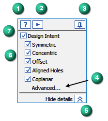

Using the Design Intent panel
If you are using Internet Explorer and a video is not displaying in your training guide, click the Tools tab (or gear icon)→Compatibility View settings, and then clear the selection of Display intranet sites in Compatibility View.
The Design Intent panel opens when you make modifications to a synchronous model. The options on the panel allow you to control how much of the design intent that was previously built into the model is preserved or ignored as you make a move.
How to use the Design Intent panel
Select a face or feature on your synchronous model. Synchronous models use face relationships to control the model behavior when moving faces, defining 3D relationships, or editing dimensions. The Design Intent panel opens and displays a list of design intent relationships to evaluate. All the checked relationship options are examined when you make a move. Uncheck any relationship options you do not want to evaluate, or uncheck Design Intent to ignore evaluating any design intent relationships. Any changes you make persist through the session or until you restore the default settings Using the Advanced Design Intent panel.
Continue to select the faces or features to identify the extent of the selection set.
Move the selection set. The Design Intent panel updates to display the discovered relationships. All discovered relationships are highlighted in the model and move in relation to the selection set.
If more faces and features are discovered than you want, uncheck one or more of the relationship options to reduce or change the number of affected faces. Select the combination that preserves the design intent you desire. Press Enter to complete the move. Press Escape to cancel the move.
If you require more control, use the Advanced ... option or press V on the keyboard to open the Advanced Design Intent panel after you make the initial move.
Use the options on the Advanced Design Intent panel to select how much design intent you want to preserve. The Advanced Design Intent panel and the features of the Solution Manager allow more control over the design intent that you want to preserve as a result of a move. See Using the Advanced Design Intent panel and Solution Manager Overview for more information.
The Design Intent panel opens for the following types of synchronous modeling modifications:
When you move or rotate model faces or features in a synchronous part, sheet metal, or assembly environments
When you edit the value of a 3D dimension in a synchronous part
When you edit the dimensional value of a locked 3D dimension using the Variable Table (Tools tab→Variables group→Variables).
Design Intent Panel Options

- (1) Help
-
Opens this help file.
- (2) Play video
-
Plays a short video on how Design Intent works.
- (3) Pin panel
-
Pins the Design Intent panel in place. Initially the panel appears adjacent to the face or feature clicked on the model. Once pinned, you can drag it where you want. When the pin is in this position , the Design Intent panel consistently displays in the current location until you move it or unpin it . An unpinned panel opens adjacent to the face or feature you click on the model.
- (4) Advanced...
-
Opens the Advanced Design Intent panel. The Advanced Design Intent panel is used to further control which Design Intent relationships you want to preserve or ignore. See Using the Advanced Design Intent panel for more information.
- (5) Hide details/Show details
-
Toggle between showing the full Design Intent panel or a minimized the panel that takes up less space in your graphics window. This setting is persistent.
- (6) Design Intent relationship options
-
Check the relationship options that you want to evaluate when a face or feature is moved. The relationship options that are displayed vary by environment and the content of the model. For example, the options in a sheet metal document include the Thickness Chain relationship by default while the Relationships option is only displayed for parts that have defined persistent relationships. In the assembly environment the Dimensions and Relationships options are always displayed. Uncheck any items in the list that you do not want to be evaluated during the move operation. You can move the cursor over these items to display the shortcut key used to activate or deactivate them.
- (7) Design Intent
-
Suppress evaluating any design intent relationships for the current move. The Dimensions (locked dimensions) or Relationships (persistent relationships) are independently controlled. The shortcut key is U.